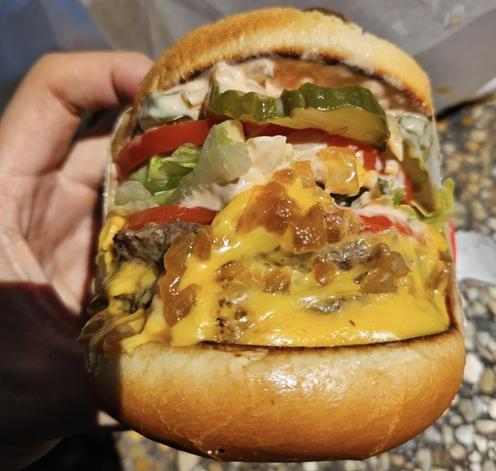

Go to Instructions Section
Review
One of the Best Burger I've Ever Had!
What's on your double-double?
By In-N-Out
Ingredients
| Amount |
Unit |
Item |
| 2 |
|
beef pattie |
| 2 |
|
toasted buns |
| 2 |
slice |
american cheese |
| 0.5 |
cup |
shredded iceberg lettuce |
| 2-3 |
slice |
tomato |
| 4-6 |
slice |
pickles |
| few |
|
onions |
| 1 |
teaspoon |
spread |
Instructions
- Toast the buns: Lightly butter the inside of the buns. Toast them on a skillet or griddle until golden
brown.
- Cook the onions (optional “Animal Style”): If you want grilled onions, chop or slice them and cook on
medium heat with a touch of oil until caramelized (about 8-10 minutes). If you prefer raw onion slices, set
them aside.
- Cook the beef patties: Form two thin patties per burger (about ¼ inch thick). Season with salt and pepper.
Place patties on a hot skillet or griddle. While cooking, spread a thin line of yellow mustard on the
uncooked side, then flip.
- Melt the cheese: When the patties are almost done, place a slice of American cheese on top of two patties.
Stack the cheese-topped patties over the plain patties to form two double stacks.
- Assemble the burger: Spread sauce on the bottom toasted bun. Place the double-stacked patties with
melted cheese on top. Layer pickles, tomato slices, and shredded lettuce. Add onion slices (raw or grilled).
Spread more sauce on the top bun and close the burger.